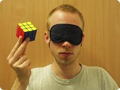

|  | ||
|
Blindsolving the 3x3 |
A while ago I invented a method to solve the 3x3 blindfolded using only a single algorithm (repeatedly). I used this old method myself for a while, even in the European Championship 2004, but since then I've improved it a lot. This page describes the resulting method. My current record for solving a 3x3 blindfolded with this new method is 5:26.80 minutes (including memorization). And not only is the new version much more powerful, but also much easier. Thanks to Werner Randelshofer for the great Java applet I use.
Algorithms - Advantages - Example Solve - Setup Algorithms - Memorization - Some Last Words
I claim anyone can solve the 3x3 blindfolded (at least any speedcuber ;-) after some preparation. Even (or "especially" ?) Jessica Fridrich who claims "I have to tell you that I could never solve the cube blindfolded. [...] My mind simply does not work this way". I'll ask her to look at this page and think about it again. What do you think when somebody says he could never solve the cube (looking, *not* blindfolded)?!?
Blindsolving roughly consists of these three steps, that I'll describe in detail:
- Analysis
- You could memorize the cube in a very raw way, for example memorize what cubie is at the ULF position, then what is at UF, then at UFR, then UL, etc. Somewhat linear. But this is pretty naive. A much better way is to determine "cycles" and memorize/solve along these cycles. Do as much analysis as possible *before* putting on the blindfold! With my method, you basically do *all* thinking while still looking at the cube. As soon as you put on the blindfold, you just need to execute what you planned earlier.
- Memorization
- Of course you need to transfer the information you gathered when looking at the cube to the phase of solving after being blindfolded. I'll show you my technique.
- Execution
- Currently I use a handful of algorithms, which most speedcubers will know already anyway, since they're sweet PLL algorithms. You'll also need some "setup-moves", but they're now very short and intuitive.
Algorithms
The basic idea is to always just swap 2 cubies at a time. I can hear you say "That's impossible", and you're right. So when I swap two edges, I also swap two specific corners. For the next edge-swap, these two corners are swapped back. And vice versa when I solve the corners. I use a "buffer" position from which I "shoot" a cubie to certain other "target" positions, thereby solving that cubie. So I solve one cubie at a time. The buffer position plus the two others I have to swap (for the reason mentioned above) is called "buffer area". These are the algorithms I use:
|
The buffer position for edges is UR, the buffer area also contains the URF and UBR corners. The position to shoot at is UL. Note that the buffer area is as compact as possible (an edge with it's two adjacent corners) whereas the target position is pretty free. This very fast algorithm |
|
| The target edge here is UF. Also a well-known and fast PLL algorithm. | |
| The target edge here is UB. Also a well-known and fast PLL algorithm. | |
| This is used for solving the corners. Buffer position is ULB, buffer area also includes the edges UL and UB. Target is RDF. Note again how compact the buffer area is and how free the target area. This is not a PLL, but very close. If you switch the two halves, it's the same as the T-permutation algorithm above! Thanks a lot to Lars Vandenbergh who told me about this (actually of course he told me something slightly different, namely the PLL alg F (R U' R' U' R U R' F') (R U R' U' R' F R) F'). |
Note that you can of course use other algorithms that do the same things. After all, not everybody uses the same PLL algs.
There are of course more possible target positions than those covered by the few algorithms above. What you need to use are "setup-moves" that are done before the algorithm and then undone afterwards:
| Shooting to target FR, using the T-permutation alg. For that, think of it as the FR *position* coming to UL with the setup-moves (d2 L), then shooting there (as it's now at UL), and then bringing the position (together with the cubie) back. Note that the setup-moves must not destroy the buffer area! At the end, simply undo the setup-moves. | |
| Also note that FR is *not* the same as RF. You can shoot to RF by using the setup-moves (d' L'). The difference is very important, since you don't just want to bring the cubies to the correct place, but also with the correct orientation, right? |
Advantages
When I came up with this method I didn't intend to use it but now I do. It has several advantages that make it my choice of blindfold system:
Example Solve
Scramble... | |
|
To demonstrate my method I'll use a scrambling algorithm from the Sunday Blindfolded Rubik's Games Contest:
|
|
Edges... | |
|
You can see the orange/blue FR piece in the buffer position UR. So let's shoot it to its goal position using the setup-alg (d2 L): |
|
| The yellow/green cubie needs to be shot to UL so no setup-algorithm is needed this time: | |
| Orange/white goes to FD using setup-alg (l'): | |
| White/red goes to DB using setup-alg (l2): | |
| White/blue goes to DR using setup-alg (D2 L2): | |
| Yellow/orange goes to UF without setup-moves. | |
| Green/red goes to LB using setup-alg (d L'): | |
|
Exception! Now in the buffer spot UR we have the correct edge cubie (just flipped)! Note however that we never care at all about this cubie! Instead, we'll just solve the remaining eleven. Which of course means this cubie will automatically be solved at the end as well. But what do we do now? We just pick an *unsolved* edge and get it *into* the buffer. Let's simply get UB needing no setup-moves. |
|
| Now we can shoot that white/green cubie to DL using setup-alg (L2): | |
| Orange/green goes to FL using setup-alg (L'): | |
| Finally, red/yellow goes to BU using setup-alg (l): | |
Parity fix... | |
| Now we're finished solving the edges. It took us 11 "steps", each being some (setup,PLL,setdown). So edges are solved. But what about corners? Of course only the two corners of the buffer area can be swapped. In fact, they are, because 11 is an odd number. To make up for this we'll just swap them back, so that all corners are exactly like after scrambling. But in addition, we'll also swap the two edges contained in the buffer area for solving the corners. Overall, we swap (URF,UBR) and (UL,UB). That's a PLL, but I prefer to do it with the T-permutation followed by an edge 3-cycle (without any U-adjustments). Yes, that is all you have to do to fix the parity problem. First the T-permutation to restore the corners. | |
|
Then do the edge 3-cycle to have the correct two edges swapped. |
|
Corners... | |
| Now we'll use the ULB corner together with the UL and UB edges as buffer and we'll "shoot" to RDF. The yellow/red/blue (clockwise around the corner) needs to go to UBR. Actually I only write the first two colors/faces, so I'd say the yellow/red corner needs to go to UB. From the context it should always be clear whether an edge or corner is meant. Use the setup-alg (R D'). Also notice that after this, all edges are of course solved again! | |
| Exception! Now in the buffer spot UL (the corner, of course) we have the correct corner (just twisted)! Just like in the equivalent case for edges we had earlier, we'll just get an *unsolved* corner *into* the buffer spot. Let's be lazy and choose RD, that one doesn't need a setup-alg. | |
| Now in the buffer we have yellow/orange, which needs to go to UF. Use setup-alg (F R'). You can see that the R' of the setup-alg and the R of the algorithm cancel. I would still execute them, though. Makes me feel safer. | |
| Yellow/blue goes to UR using setup-alg (F): | |
| White/green goes to DL using setup-alg (F'): | |
| Blue/red goes to RB using setup-alg (R): | |
| Orange/blue goes to FR using setup-alg (R F). You could of course also mirror our algorithm, then you could directly shoot-solve the corner without setup-moves. | |
| Exception! The only thing left is to orient two corners. We could do this with a special algorithm that twists both the buffer corner ULB and the opposite corner DRF (and in our current situation using setup move D2). However, I'd like to do it in two more of those steps we've been doing the whole time, just for consistency reasons. This is the most likely algorithm I'll add in the future, though. So let's get the unsolved LD corner into the buffer using the setup-alg (D2): | |
| Finally red/green goes to BL using setup-alg (D' R). The cube is solved! | |
Setup Algorithms
The setup-algs are all pretty easy and intuitive, so I won't tell you all of them. You've seen some possibilities in the example solve above. Here are just some stats, namely the number of edge and corner targets reachable in some moves. You can see that on average, you need less than 1.5 setup-moves and the worst case (only one) is three moves. These numbers can of course be reduced further by adding more algorithms. For example shooting an edge to LU would result in an average of just 1.09 moves for edges!
| #Moves | #Edges | #Corners |
| 0 | 3 | 1 |
| 1 | 9 | 9 |
| 2 | 9 | 11 |
| 3 | 1 | 0 |
| Total | 22 | 21 |
| Average #moves | 1.36 | 1.48 |
Memorization
Ok, you've seen the example, which demonstrated the analysis and the execution parts. Now let me tell you how I memorize. You might have noticed that I always wrote the target positions in a light blue color. Here they are again:
FR - UL - FD - DB - DR - UF - LB - UB - DL - FL - BU - stop - UB - RD - UF - UR - DL - RB - FR - LD - BL
Actually I don't work with positions, I work with colors. So what I really get when I blindsolve the 3x3 is the following sequence of color pairs. And no, I don't use the positions and translate them to color pairs like this here may look like. I directly use color pairs. And you can find this sequence just by looking at the cube, without solving it. The first "OB" (orange/blue) is obvious, since it's simply the cubie in the buffer position. And you can find the "YG" (yellow/green) simply by looking at the "OB" place (i.e. where "OB" belongs). And you can find the "OW" simply by looking at the "YG" place. And so on, simply walk along the cycles. Try to scramble the cube again (with the example scramble) and find the color pair sequence yourself just by looking at the cube.
OB - YG - OW - WR - WB - YO - GR - YR - WG - OG - RY - stop - YR - BW - YO - YB - WG - BR - OB - GW - RG
This sequence is all you need to memorize. Then after putting on the blindfold, all you need to do is do something easy for each item in the sequence. And memorizing that sequence is also very easy. What? You don't think it's that easy to memorize? That's only 20 items! For the 5x5, I had to memorize nearly 100! And there are people who memorize a random number with 2000 digits in one hour. Are we geniuses? No, not at all. Are people who can solve the 3x3 (*not* blindfolded) geniuses? No, not at all. What's the secret? Good systems.
So what's a system to easily remember the above sequence? First of all, let me tell you that I don't memorize "YG". As soon as I see the cubie, I think of a banana. I don't even think "YG" at all. I just think "banana". Why? Because I see yellow as primary color and I see green as secondary color. A banana is mostly yellow but also a bit green. Instead of "WB" I think "Donald Duck" (white body, blue shirt). Instead of "RB" I think "Spiderman" (red top, blue pants). Instead of "YR" I think "french fries with ketchup" (obvious). These are all *pictures* I can easily envision. So that's the first step. Think of nice visual objects instead of color pairs. You only need to come up with 24 visual objects, one for each color pair. You can use my few examples, but I won't tell you the rest. It's much better for you if you invent them yourself. Many people use numbers or characters to represent the cubies. I think that's extremely artificial because these are very abstract things. I don't even use things like that as intermediate steps. I only see a cubie and immediately think "banana", because that's what the cubie simply looks like.
Now how do I memorize a sequence of visual objects? For example, how could I memorize this sequence?
Banana
Donald Duck
Spiderman
French fries with ketchup
Method 1: Invent a story, for example... A banana lies on the table. It looks and smells very nice. Donald enters the room, notices the banana and wants to eat it. He's almost there, but Spiderman jumps superfast in front of him and steals the banana. Donald is angry and decides to get some french fries. He prefers junk food anyway... The important thing is to really really *experience* this story in your head. Imagine how very fresh the banana looks and smells like. Maybe you "see" the smell in the air, like in cartoons? Watch closely how happy Donald looks when he sees the banana and starts to run for it. And do you hear him screaming angry when Spiderman steals it? And do you see Spiderman's evil grin? You could add much more information. The more, the better (in terms of memorization safety, not speed, of course ;-). Use as many senses as possible. See it, hear it, smell it, feel it! Use extremes, e.g. the banana could be 2 meters long and Spiderman rides away on it. Makes it easier to memorize!!! Use sexual, illegal, brutal things! Whatever! Extreme things are easier to memorize!!! Blue/yellow is a beautiful stewardess for me and I really like to include her in my mental stories ;-)
Method 2: Similar to method 1, but you use a mental "route" you've prepared beforehand. For the 5x5, I've built myself a mental home with ten rooms, each having ten "places" in it, so overall 100 places. The first "room" is in front of the house, starting with a tree, then a swing hanging down from it, then a motorcycle, then a car (Ferrari ;-), etc... When you memorize a sequence, you mentally "combine" the i-th item in the sequence with the i-th item in the prepared mental route. Envision similarly exciting (or disgusting ;-) things, like in method 1. Oh, how I like it when the stewardess accidently needs to be combined with the bed in my bedroom ;-). Imagine bananas growing on the tree, Donald swinging (and singing?) on the swing, Spiderman playing with the motorcycle, a big fat french fry couple driving away with your Ferrari. Later you just need to walk along that mental route. For the 3x3, a route with 30 places should be enough, usually you need 20-25. You can also try to combine the two methods, build a story along a mental route. The mental route has the advantage that it's hardly possible to forget an item.
I also encode the end of each phase (for 3x3 just edges phase, corners phase) so that I know when to stop (and begin the next phase or take off the blindfold. Since there's nothing more to do, I thought of a black hole for this. But that's not a nice object. So instead I envision Stephen Hawkings in his wheelchair.
One last trick: To make sure you didn't forget some cubies (very important in more complex puzzles, like 5x5 or Megaminx), count! The rule is:
#items = (#wrong cubies) + (#cycles) - 2
In the example, the red/blue edge was correct, so we had 11 wrong edges. We had 2 edge cycles. So we should expect 11+2-2=11 items to memorize for the edges. That's indeed correct. No corners were correct, so we had 8 wrong corners. There were 3 cycles (one just for orienting the last two corners). So we should expect 8+3-2=9 items to memorize for corners. Again, that turned out to be correct.
Btw, I completed my memo home 30 minutes before I started my first ever attempt to solve the 5x5 blindfolded (at the European Championships 2004). And I remembered most of the almost 100 items even three weeks later with only recalling it once in the meantime. In fact, I was worried I might never be able to forget it and that it might give me trouble in future attempts. I just mention this in order to emphasize how easy the memorization part really is. It's much harder to stay concentrated and not make an execution mistake! Memorization is *not* the problem!
Some Last Words...
When I invented this method my main objective for writing about it was to show it's possible to solve the cube (blindfolded) using only a single algorithm (that was before I added some, when I only used the T-permutation). I had read on stiff_hands's page that five algorithms are required, but one is enough as well. Actually of course you don't need to know any algorithms if you can invent what you need on the fly, e.g. with simple intuitive commutators doing 3-cycles (that's how I solved the Megaminx blindfolded).
My first approach (the 528 bytes program) for Tom's CubeSolver Contest uses basically the same idea, but it uses four main algorithms (orient/permute edges/corners). Btw, yes, that tiny program is capable of completely solving a scrambled cube!
Let me know what you think about my method and this description page!
Last modified: June 27 2007, 05:01:43.
Stefan Pochmann